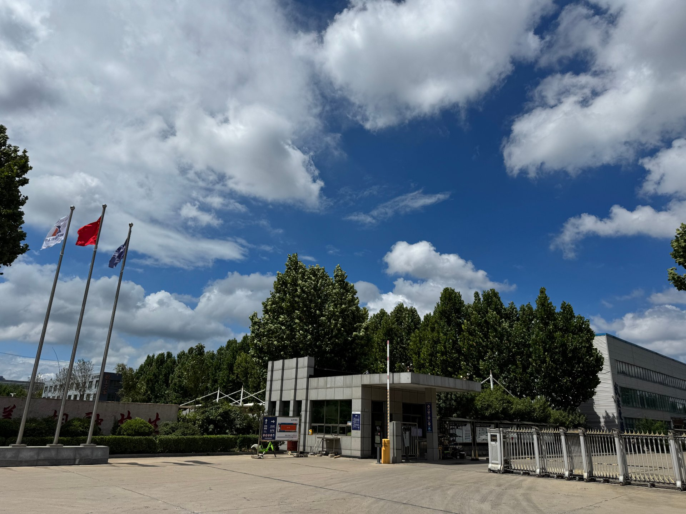
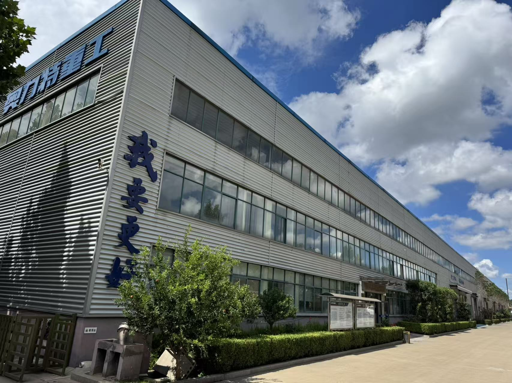

I have sat on the other side of the table more times than I can count.
A dealer from Nigeria opens the video call. A distributor in Saudi Arabia sends a voice note. An importer in Peru emails a six-page questionnaire. They all want the same thing — a backhoe loader supplier they can trust with their money, their reputation, and the customers waiting at their end.
And here is what most supplier-facing articles never tell you: dealers do not search the same way end buyers do. They do not start with price. They do not start with features. They start with a single, paranoid question — "If I wire $30,000 to this person, will the machine actually arrive, work, and stay running for the next ten years?"
I have watched this question get answered well, and I have watched it get answered badly. Sometimes I am the supplier being vetted. Sometimes I am the one answering a dealer's desperate call after a competitor has let them down. Either way, I have learned exactly what dealers search for, what they check, and what makes them walk away.
This article is the guide I wish existed when I started. It is what dealers actually type into Google at 11 PM, the six background checks they run before they even reply to your email, the eight product questions they use to test whether you actually built the machine or just photographed it, and the five red flags that kill a deal in seconds. If you are a dealer or distributor importing backhoe loaders, this is your screening playbook. If you are an end buyer, it is the same playbook your supplier is going through — and you deserve to know what it looks like.

In This Guide
- What Dealers Search First (and What That Search Reveals About the Pool)
- The 6 Background Checks Every Dealer Runs
- The 8 Product Questions That Test If You Really Built the Machine
- Price Negotiations: What $5,000 of Difference Really Means
- The 5 Red Flags That Send Dealers Running
- The Smart Dealer's Trial Order Strategy
- How Dealers Vet Differently from End Buyers
- What Dealers in Africa, Southeast Asia, and the Middle East Actually Search For
- How I Make My Supply Chain Easy to Vet
- Frequently Asked Questions
What Dealers Search First (and What That Search Reveals About the Pool)
Every dealer starts with the same handful of search queries. They are deceptively simple, but the order and wording tells you a lot about which supplier pool the dealer is about to fall into.
Here is the actual search sequence I have watched dealers use, in order:
- "backhoe loader manufacturer" or "backhoe loader factory" — this is the "I want a real factory, not a trading company" search.
- "backhoe loader supplier China" or "backhoe loader wholesale" — this is the "I want price leverage" search.
- "backhoe loader [model number] specs" — once they have a candidate, they go narrow.
- "[company name] review" or "[company name] scam" — this is the background check search, and it is the one most suppliers never see coming.
- "backhoe loader CE certificate" or "[country] import regulations backhoe loader" — this is the "I want to know if I can actually clear customs" search.
Now here is the part most people miss. The first three words a dealer types decide which pool of suppliers they get. A dealer who searches "cheap backhoe loader China" will land on a different page of Google than a dealer who searches "reliable backhoe loader manufacturer for Africa." The cheap search returns 1,800 USD Alibaba specials with 3-month-old shell companies. The reliable search returns the manufacturers who have been around for ten years and have the export records to prove it.
I have had dealers tell me, very honestly, that they typed the cheap version first, looked at what they found, deleted those browser tabs, and then retyped the better version. The first search is the dealer being human. The second search is the dealer being a professional.
If you are a dealer reading this — start with the professional search. The 30 minutes you save by going with the cheap search is the 30 minutes you will spend chasing a problem for the next two years.
The 6 Background Checks Every Dealer Runs
Once a dealer has a shortlist of 3-5 suppliers, they run a background check on each one. These are the six checks I see them use, every single time. If you fail any of them, you are usually out of the running within an hour.
Check 1: Is this a real factory or a trading company?
Dealers do not want to pay middleman margins. They want the manufacturer. The check is simple: ask for the business license, then look up the registered address on China's National Enterprise Credit Information Publicity System (国家企业信用信息公示系统). If the registered address is a residential apartment or a small office in a trade city like Yiwu, you are not talking to a factory.
The next step is a real-time video tour. Not a polished marketing video — a live WhatsApp or Zoom call where the dealer asks the supplier to walk through the workshop, point at the welding line, the paint booth, the assembly area. A real factory can do this in 60 seconds. A trading company will suddenly have connection issues, scheduling conflicts, or "the workshop is closed today."
Check 2: Which components do you actually make?
This is the question that separates the manufacturers from the assemblers. A real backhoe loader factory makes the chassis, the loader arm, the backhoe boom, the cab, the buckets, and the hydraulic tank. They source the engine, the axles, the hydraulic pump, and the tires from specialist suppliers. There is nothing wrong with this — even the biggest names in the world do not make their own engines.
What is wrong is when a supplier says "we make everything" and cannot tell you which brand of engine or which brand of hydraulic pump they use. The honest answer is: "We manufacture the structure and assembly. The engine is Yuchai or Cummins, the axle is our own brand or Carraro, the hydraulic pump is Bosch Rexroth or our own brand. Here are the supplier names."
The dishonest answer is: "We use top brand components" — with no name attached.
Check 3: Do you have an export record I can verify?
Every Chinese exporter has a customs registration number, and every shipment generates a customs declaration. A real exporter will be able to share recent shipment records — sometimes with customer names redacted, sometimes with destination countries visible. A dealer can cross-check by asking for the HS code (8429.51 for backhoe loaders) and the destination ports.
If the supplier hesitates or says "we don't usually share that," it does not mean they are dishonest. It does mean they are new. And newness is a risk the dealer may not want to take on a $30,000 order.
Check 4: Are your certificates real and verifiable?
CE marking is mandatory for export to most countries. ISO 9001 is the quality management baseline. Both certificates have registration numbers, and both can be cross-checked on the issuing body's website or on China's CNCA database.
A real certificate has:
- The supplier's full legal name in English and Chinese
- The certificate number
- The issuing body's name and accreditation mark
- An issue date and expiry date
- The supplier's official company seal
A fake or borrowed certificate usually has a generic company name ("China Heavy Machinery Co."), a vague issuing body, or no number at all. The dealer finds this out within five minutes by googling the certificate number.
Check 5: Will you do a real-time video call?
I have written this as a separate check because it is one of the most reliable signals. A real factory says yes immediately. A trading company says "let me check with the workshop" and then delays for three days. A scam operation never agrees at all.
The dealer will not just want a marketing video. They will want a live call where they can point the camera at the welding station, ask the worker to show their badge, walk to the parts storage area, and count how many backhoe loader chassis are sitting on the line. They will also want to meet the engineer who will handle their after-sales questions, not just the salesperson.
Check 6: Is the person I am emailing the person who builds the machine?
Many Chinese factories have a separate export sales team whose job is to answer dealer emails. These salespeople often cannot answer technical questions, do not know the production schedule, and have to forward every technical question to the engineering team. This creates a 24-48 hour delay on every meaningful question.
Dealers notice this. They start asking questions like: "What is the torque setting on the swing motor bolts?" or "Which version of the hydraulic pump do you use on the 2025 production batch?" If the salesperson stumbles or has to "check with engineering," the dealer is not talking to a reliable supplier. They are talking to a middleman with a factory photo album.

The 8 Product Questions That Test If You Really Built the Machine
Once a dealer is past the background checks, the product conversation starts. These are the eight questions I see every dealer ask, and they are not the questions on the marketing brochure. They are the questions that probe what the supplier would prefer not to answer.
Question 1: What is the actual operating weight of the machine, with full fluids and a standard bucket?
The reason this question matters: many spec sheets list the "shipping weight" or a marketing weight that excludes fuel, hydraulic oil, and operator. The dealer needs the true operating weight for transport planning, ground pressure calculations, and trailer or container loading. If the supplier cannot give this number in writing, the supplier does not know what they built.
The honest answer sounds like: "Operating weight is 8,200 kg with a 1.0 m³ standard bucket, full fuel, full hydraulic oil, and 17.5-24 tires. Shipping weight is 7,950 kg because we drain the fluids and remove the cab for export."
Question 2: Where is the steel sourced, and what is the actual thickness on the loader arm and backhoe boom?
This is the question that exposes the "skinny machine" problem. Many budget backhoe loaders use 12mm or 14mm steel on the main loader arm when the industry standard is 16mm or 18mm. The difference is invisible in the marketing photo and obvious after one year of heavy work. The dealer asks because they know which factories cut corners on steel.
Question 3: Which engine brand and which emission standard?
Stage II, Stage III, Stage V, EPA Tier 4 Final — these are not interchangeable. A dealer exporting to Europe needs Stage V. A dealer exporting to Africa usually wants Stage II for fuel flexibility. A dealer exporting to the Middle East usually wants Stage III. If the supplier only offers one engine option, the dealer knows the supplier is not really a manufacturer — they are just reselling whatever engine is cheapest that quarter.
Question 4: Which axle brand and which hydraulic pump brand?
Axles and hydraulic pumps are the two components that decide whether the machine lasts 3 years or 15 years. The dealer is listening for specific brand names: Carraro, ZF, or self-branded for axles; Bosch Rexroth, Poclain, or self-branded for hydraulic pumps. If the supplier says "we use top brand" without naming one, the dealer assumes the worst.
Question 5: How is the machine tested before shipment?
A real factory has a Pre-Shipment Inspection (PSI) process: every machine runs for 30-90 minutes on the test track, all hydraulic functions are cycled, all electrical systems are checked, all fluid levels are verified, and a checklist is signed off. The dealer wants to see this checklist, or at least a video of the test run.
A trading company that just resells machines does not have a PSI process. They hand the dealer whatever the factory hands them.
Question 6: Can you customize the color, branding, and decals?
For a dealer building a private label, this is non-negotiable. The supplier must be able to paint the machine in the dealer's color, apply the dealer's decals, and put the dealer's brand on the operator manual. Most real factories can do this with a 5-10 unit MOQ. Most trading companies cannot.
Question 7: What is your spare parts inventory and lead time?
This is the question that decides whether the dealer will ever come back. A factory that supplies machines but cannot supply parts is not a long-term partner — it is a one-time sale. The dealer wants to know: which parts are in stock, what is the lead time for non-stock parts, can small parts orders ship via air freight, and is there a parts catalog with reference numbers.
Question 8: Can you provide a reference customer I can talk to?
Not all suppliers will agree to this, and that is understandable — customer privacy matters. But a supplier who can connect the dealer with one or two existing customers, even if just by phone, is signaling that they are proud of their track record. A supplier who refuses entirely is signaling that the track record is not there yet.
Price Negotiations: What $5,000 of Difference Really Means
Let me tell you what a $5,000 price difference actually means in the backhoe loader world. It is not a negotiation room. It is a signal.
If a dealer gets three quotes for the same model:
- Supplier A: $24,500
- Supplier B: $21,000
- Supplier C: $18,500
The difference between A and C is $6,000 — on a machine that costs $20,000+ to manufacture. That is a 30% gap. Something is structurally different, and it is almost never "Supplier A is greedy."
Here is what I see in the actual price breakdown:
| Where the $6,000 goes | What it buys |
|---|---|
| Engine brand | Yuchai vs. unknown Chinese brand: $1,200–2,500 difference |
| Steel thickness on loader arm | 18mm vs. 14mm: $400–800 difference |
| Axle brand | Carraro vs. self-branded: $800–1,500 difference |
| Hydraulic pump | Bosch Rexroth vs. generic: $600–1,200 difference |
| Paint and rust protection | 2-coat marine-grade vs. 1-coat standard: $300–600 difference |
| Pre-shipment inspection | 60-min test run + checklist vs. quick visual: $200–400 difference |
| Warranty and parts commitment | Written 12-month warranty + parts catalog vs. verbal "we will help": $500–1,000 difference in expected downtime cost |
The cheap supplier is not making less profit. The cheap supplier is cutting the same components that determine whether the dealer's customer comes back in two years or files a complaint. The dealer is not paying $6,000 for "greed" — the dealer is paying $6,000 to not have that conversation with their customer.
How dealers test a supplier's honesty with a price conversation
Smart dealers do not just compare the headline number. They do this:
- Ask each supplier to break the price down by major component (engine, axles, hydraulics, structure, paint, assembly).
- Compare the components. If Supplier A lists "Yuchai engine, Carraro axle, Bosch Rexroth pump" and Supplier C lists "top-brand engine, top-brand axle, top-brand pump," the dealer knows Supplier C is hiding the cost — or, worse, does not know what is in the machine.
- Ask for the price of a "skeleton" version — no cab, no AC, no radio, minimum hydraulics. If the supplier can quote a stripped version precisely, they know what each component costs. If they cannot, they are not actually building the machine.
This is also why I tell dealers: if the price sounds too good, ask for a video of the components being installed, not the finished machine. A finished machine photo is decoration. A video of the hydraulic pump being bolted in is proof.
The 5 Red Flags That Send Dealers Running
I have watched deals die in seconds. Here are the five red flags that, the moment they appear, cause a dealer to politely end the conversation and move on. None of them are subtle.
Here is the part most suppliers never get: the dealer is not telling you why they are leaving. They are not going to send you a polite "you failed check 3" email. They are just going to stop replying, and you will never know why. This is the dealer protecting their time, not being rude. If you want to know what you did wrong, hire someone to pretend to be a dealer and run your own sales process from the outside. You will be shocked at how many things you do that cause a dealer to move on.
The Smart Dealer's Trial Order Strategy
I love working with dealers who order 1-2 machines first. They are not being cheap. They are being smart. Here is the trial order strategy I see the most successful dealers use.
Step 1: Start with 1-2 units, even at a higher per-unit price
The first-order discount is real. Most factories will give a better price for 5 units than for 1 unit. The smart dealer says no to the discount and orders 1-2 units at the higher price. The cost difference is $500-$1,500 per machine. The risk reduction is massive.
The reason: a 5-unit order tells you almost nothing new. You already know the supplier can build 5 machines. A 1-2 unit order tests whether the supplier treats a small dealer as well as a large one — because that is the supplier you will be dealing with for the next 10 years.
Step 2: Watch four things during the trial
During the trial order, the smart dealer tracks four specific things:
- Machine condition on arrival. Does it look like the video tour machine, or does it look like a different grade? Any dents, scratches, missing parts, or fluid leaks?
- Document completeness. Invoice, packing list, bill of lading, certificate of origin, CE certificate, engine certificate, warranty card, operator manual. Are they all present, accurate, and in the dealer's name?
- After-sales response time. When the dealer asks a question 30 days after delivery, how fast does the supplier reply? Within 4 hours, or 4 days?
- Spare parts availability. When the dealer orders a common wear part (a bucket tooth, a hydraulic hose, a filter), how long does it take to arrive, and is the price reasonable?
Step 3: Scale up only if all four pass
If all four checks pass, the dealer scales to 5-10 units per order, starts a quarterly purchasing rhythm, and usually visits the factory in person within 12 months. If any of the four checks fail, the dealer moves to the next candidate on their shortlist and never orders from the failed supplier again. The cost of the failed trial is $25,000-$50,000 — a small price to pay for learning that the supplier is not long-term.
This is also why I tell every dealer I talk to: do not skip the trial because the per-unit price is worse. The discount on a 5-unit order is not a gift. It is the factory recovering margin they would have lost by not being able to support a long-term relationship. If the factory cannot support a 1-unit trial, they will not support your 100-unit year either.
How Dealers Vet Differently from End Buyers
This is the section I have never seen written elsewhere, and it is the one that most affects what you should expect from a dealer conversation.
End buyers care about the machine. Dealers care about the machine and the supply relationship. The difference sounds small. It is not.
An end buyer who buys one backhoe loader asks: "Will this machine work for my job site?" A dealer who buys 10 backhoe loaders asks: "Will this supplier still answer my email in 3 years when I need a part?"
The dealer's customer never sees the factory. The dealer never sees the factory either, in most cases. What the dealer sees is the supplier's responsiveness, honesty, and reliability over months and years. That is the product the dealer is actually buying.
Here is what this means in practice:
- Dealers will tolerate a slightly higher price in exchange for a supplier who answers the phone, ships parts in 7 days, and honors warranty claims without arguing. The end buyer might haggle over $500. The dealer is paying $1,500 more for that phone call.
- Dealers will reject a "great price" supplier who cannot explain which engine is in the machine, because that supplier will be the same way when the dealer's customer needs warranty service. The end buyer does not think about this. The dealer thinks about it every day.
- Dealers will ask about the supplier's own dealer program — is there a protected territory, a co-op marketing fund, a training program for the dealer's mechanics, a parts catalog with the dealer's brand on it. The end buyer never asks these questions because the end buyer is not building a brand.
The reason I write this is simple: if you are an end buyer, and you are reading a dealer's perspective, you now understand why your dealer is asking you strange questions. They are not being difficult. They are screening on your behalf. The dealer who asks you "which brand of hydraulic pump do you want" is a dealer who is taking responsibility for the machine you will live with for the next decade.
What Dealers in Africa, Southeast Asia, and the Middle East Actually Search For
Dealer search behavior is not global. It is regional. Here is what I see, broken down by market, because the differences matter for how you should position your supply if you are a supplier.
African dealers (Nigeria, Kenya, Tanzania, Ghana, Senegal)
African dealers search in two distinct waves. The first wave is: "backhoe loader price Nigeria", "backhoe loader Lagos", "backhoe loader Kenya importer". The second wave, after they have a shortlist, is: "backhoe loader South Africa dealer", "China backhoe loader export Africa experience", "DHL shipping Lagos customs clearance".
What African dealers are really searching for: a supplier who has shipped to Africa before and understands the documentation, port handling, and payment friction specific to African markets. They also search for "backhoe loader with Stage II engine" because diesel quality in many African countries makes Stage III or higher engines problematic. The supplier who offers Stage II as a standard option, not as a downgrade, is the supplier African dealers remember.
Southeast Asian dealers (Philippines, Indonesia, Vietnam, Thailand, Myanmar)
Southeast Asian dealers search: "backhoe loader distributor Philippines", "backhoe loader Vietnam dealer program", "Komatsu vs. Chinese backhoe loader", "XCMG backhoe loader dealer". The interesting one is the comparison search — these dealers are benchmarking Chinese machines against Japanese and Korean brands, and they are doing it openly with the supplier. The supplier who can answer the comparison honestly, without bashing the Japanese brand, is the supplier they trust.
What Southeast Asian dealers care most about: parts supply speed, because the customer base in this region has zero tolerance for downtime. A dealer whose supplier can ship a hydraulic pump from China to Manila in 5 days wins. A dealer whose supplier needs 30 days loses, even at a lower machine price.
Middle Eastern dealers (Saudi Arabia, UAE, Iraq, Egypt, Jordan)
Middle Eastern dealers search: "backhoe loader Saudi Arabia", "backhoe loader Stage V", "heavy equipment dealer Dubai", "backhoe loader for desert conditions". The Stage V search is because Saudi Arabia and the UAE are moving toward European emissions standards, and dealers know this. The desert conditions search is because extreme heat puts a different stress on hydraulic systems, and dealers want a supplier who has tested in those conditions.
What Middle Eastern dealers care most about: brand presence. A dealer in Dubai is selling to contractors who may also buy Caterpillar, Komatsu, and JCB. The dealer needs a Chinese supplier whose machines can stand next to those brands in the yard without looking cheap. This is why Middle Eastern dealers ask more about paint quality, decal quality, and operator cab comfort than African or Southeast Asian dealers. The machine has to look the part, because the dealer's customer is going to photograph it.
How I Make My Supply Chain Easy to Vet
I am going to end this article with a confession that might sound like a sales pitch, but I mean it as a fact: I welcome being vetted. I have lost deals to suppliers who were cheaper, glossier, or faster. I have won deals because the dealer got far enough into the process to see that I was not hiding anything.
Here is what I do, and what I tell every dealer who asks.
I will do a live video call any time, weekday or weekend, no scheduling dance
If you ask me for a factory tour at 9 PM because that is the only quiet hour in your day, I will pick up. I will walk you through the welding line, the paint booth, the assembly area, the parts storage, and the loading dock. I will point the camera at the badge of the engineer who will handle your after-sales questions. I will not say "the workshop is closed today" because the workshop is never closed in a way that prevents a video call.
I will name every component in the machine, in writing
Engine brand and serial number. Axle brand. Hydraulic pump brand and model. Tire brand. Battery brand. Paint brand. If a component is "self-branded" (we make it ourselves), I will tell you that, and I will show you the production line where it is made. If a component is sourced from a name-brand supplier, I will give you the supplier's name and the model number, and you can verify it on their website.
I will give you a written warranty, in your name, in advance
Not "we will help you if there is a problem." A 12-month written warranty, on company letterhead, with the dealer's name on it, signed before the deposit is paid. If the machine fails in the warranty period, I will ship the parts or arrange the repair. I will not argue about whether the failure is covered. The warranty is the warranty.
I will let you order 1-2 units first, at a fair price
You will not get the 5-unit discount on your first order. You will get a fair price for a 1-2 unit order, and you will get my full attention. When the trial passes and you come back for 5-10 units, I will give you the volume price. This is how I work with every new dealer. The first order is the trust order. The volume comes after.
I will ship parts for the lifetime of the machine, not just during the warranty
I have shipped parts for machines I sold 8 years ago. I have shipped parts to dealers whose contact person has changed 3 times. I keep a parts catalog for every model I have ever sold, and I keep the model numbers consistent. If you need a bucket tooth pin for a 2018 BL 70-25, I will find it in my catalog, and I will ship it within 7 days. The machine may be out of warranty. The parts supply is not.
That is the supply relationship I sell. It is not the cheapest. It is not the flashiest. It is the one I want to defend in a video call at 9 PM, in 5 years, when you call me about a hydraulic hose you need shipped to Lagos by Friday.
If you are a dealer or distributor reading this, and you have gotten this far, I think we would work well together. Send me a message with the model you are interested in, the destination country, and the volume you have in mind. I will reply within 24 hours with a real answer, not a sales script.
Are you a dealer sourcing from China?
I help dealers and distributors in 30+ countries source backhoe loaders directly from the manufacturer. Live video factory tours, written warranties, transparent component lists, and parts supply for the lifetime of the machine.
Message Vivian on WhatsAppFrequently Asked Questions
How do backhoe loader dealers find suppliers online?
Dealers usually start with broad Google searches like "backhoe loader manufacturer" or "backhoe loader supplier China," then narrow down through Alibaba, Made-in-China, LinkedIn, and YouTube. They verify candidates by checking export records, certificates, factory video tours, and asking detailed product questions before requesting any quotation.
How can I tell if a Chinese machinery supplier is a real factory or a trading company?
Ask for the business license (verify the registered address on the Chinese National Enterprise Credit Information Publicity System), request a real-time factory video tour, ask which components they manufacture in-house versus source from other factories, and request photos of their own production line. A real factory will show you welding stations, paint lines, and assembly bays. A trading company usually shows you a warehouse with someone else's products.
What questions should a dealer ask a backhoe loader supplier before ordering?
The most important questions are: (1) Are you the manufacturer or a trading company? (2) Which components do you produce vs. source? (3) Can you provide a real-time video tour? (4) What is the engine brand and origin? (5) What axle and hydraulic pump brand do you use? (6) Can you provide CE/ISO certificates with verifiable numbers? (7) What is your MOQ and payment term? (8) Do you offer after-sales parts supply? (9) Can you share recent customer references? (10) What is your warranty and how is it handled?
How do dealers verify a backhoe loader supplier's certificates?
Every CE and ISO certificate has a registration number. Dealers cross-check the number on the issuing body's official website or the CNCA database. They also ask for the certificate to be stamped with the supplier's official company seal, and they verify the issuing body's authority. A certificate without a verifiable number, or from an unknown issuing body, is a red flag.
What is MOQ for backhoe loaders when buying wholesale?
Minimum order quantity for backhoe loaders is usually 1 unit for trial orders and 2-5 units for standard wholesale pricing. Some factories offer tiered discounts at 5, 10, and 20-unit thresholds. A 20-foot container can hold 1-2 small machines or 1 mid-size machine, while a 40-foot high-cube container can hold 1-2 larger machines. Dealers often start with 1-2 units to test quality before scaling up.
What payment terms do Chinese backhoe loader suppliers typically accept?
The most common payment terms are 30% T/T deposit with 70% balance before shipment, or L/C (Letter of Credit) at sight for larger orders. Some suppliers accept a 20%/80% split. Avoid suppliers who require 100% upfront payment or only accept wire transfers to personal accounts. Established factories accept T/T to company accounts and L/C from recognized banks.
What are the biggest red flags when choosing a backhoe loader supplier?
The five most common red flags are: (1) Refusing real-time video calls or factory tours, (2) Quoting prices significantly lower than the market average with no clear explanation, (3) Pressuring you to pay 100% upfront or to a personal account, (4) Providing certificates that cannot be verified on official databases, (5) Using stock photos instead of real product images. Any one of these should trigger deeper investigation.
How do dealers test a new backhoe loader supplier before placing a large order?
Smart dealers start with a small trial order of 1-2 units, even when the supplier offers better pricing for larger volumes. They evaluate four things during the trial: machine quality on arrival, completeness of shipping documents, responsiveness to after-sales questions, and speed of spare parts supply. If all four pass, they scale to larger orders. If any fail, they move on without losing much.
How do dealers find spare parts suppliers for backhoe loaders?
Dealers prioritize suppliers who can supply both machines and parts long-term, because parts availability determines whether customers stay loyal to the brand. They ask about parts inventory levels, lead times for common wear items, and whether the supplier can ship small parts orders via air freight when needed. A supplier who only sells machines but cannot support parts supply is usually rejected, even at a lower price.
Should a dealer buy from a manufacturer or a trading company?
Buying directly from the manufacturer gives better pricing, more customization options, faster communication on technical issues, and reliable after-sales parts supply. Trading companies can be useful for one-off purchases or when you need multiple brands in a single shipment, but they add a margin, have limited technical knowledge, and often cannot support warranty claims or parts supply long-term. For dealers planning to build a long-term business, manufacturer relationships are almost always better.